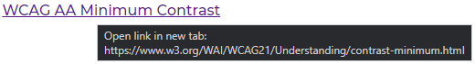

Accessibility
Screen readers and keyboard users
To make sure our website is usable to as many people as possible, we’ve focused a lot on accessibility. We made some additions to our code that does not affect the average user as much, but is extremely helpful for those who might need it.
At the very top left of the navigation bar, there is a button accessible by keyboard and screen readers that will slide in from the left when in focus. The button lets keyboard users and screen readers skip each item in the navbar and go directly to the main content. To prevent it from being a distraction, its visibility is hidden as long as you do not use keyboard shortcuts or a screen reader.
We also made it so that it does not interfere with the navigation bar when the screen width is too narrow, shown above.
As with any website following the WCAG guidelines, we added alt-descriptions and hover titles to our images and videos. We also used proper semantic code both for accessibility and to make the coder easier to maintain and understand.
Interactive parts of our website (links, navigation bar, buttons, etc) are all usable through a keyboard. We made sure to structure the content in the right order so that navigation does not skip certain elements (like links).
Links
All links, except from the ones in the navigation bar, will open in new tabs. This is because they are references and does not need to be viewed as the main content, rather, they are additional resources if the user wants to read more. These links also include titles that tells the user it will open in a new tab along with the full URL itself.
Mobile responsiveness
As for mobile, we added media queries to make sure people can use our website on smaller screen sizes. Because our navigation bar contains 5 items, they would not be as neatly displayed on mobile, opposed to larger screens. Therefore, we added a clickable burger menu with JavaScript. This is also usable through keyboards and screen readers.
Accessibility testing
We tested our website through accessibility checkers that would automate feedback based on our code and visual structure. The first thing we noticed was that the orange text, background color and borders needed to be changed as the contrast compared to the white background was too low and did not adhere to the WCAG AA Minimum Contrast criteria for normal text. We used WebAim to look at the contrast levels.
We considered going with a blue color scheme instead, but we know that older people have a harder time perceiving blue colors, thus we went with a darker purple with a contrast ratio of 16.03 : 1 instead of the orange's 3.28 : 1. We could have gone for pure black as it would give the best contrast ratio possible, but we also wanted our website to be visually appealing and colorful, while still being well above the WCAG 2.1 AAA contrast requirement of 7 : 1 for normal text.
Return to the top of the page